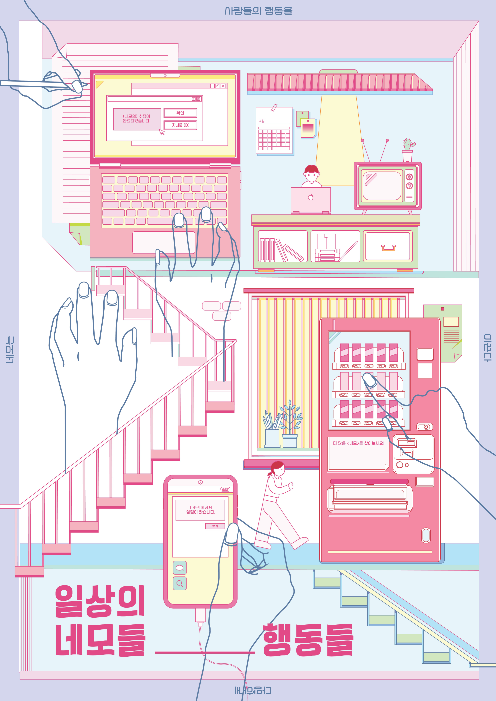

MAPPING YOUR TIME
VD1
'여름'이라는 계절이 좋아진 계기가 되었던, 여름 방학의 순간들을 다양한 질감으로 표현하였다. QR코드를 함께 넣어 직접 질감들의 움직임을 볼 수 있도록 구성하였다.
SHAPE POSTER
VD1

우리 주변을 둘러싸고 있는 물건들 중에 네모난 것들이 정말 많다는 생각에서 시작하였다. '일상의 네모들'이라는 주제로, 우리 주변의 네모난 요소들을 일러스트 포스터로 표현하였다.
BOUND BOOK OF SCRAPS
VD1
씨앗 포장지에 있는 다양한 정보들이 재미있다고 생각하여 모아보았다. 포장지에 있는 정보 뿐만 아니라 씨앗에 관련된 다양한 매체들을 함께 모아보았고, 실물 씨앗도 함께 넣어 책을 구성하였다.
MINIMALISM POSTER
VD1
'원숭이 꼬리 선인장'이라는 식물을 주제로 작업을 진행했다. 식물 이름에 동물이 들어가 있다는 점이 재미있어서 꼬리의 형상과 함께 "누구의 꼬리일까?"라는 문구를 함께 적어 표현하였다.
MAXIMALISM POSTER
VD1
원숭이 꼬리 선인장에 대한 TMI를 적은 포스터이다. 곡선인 꼬리의 형상과 대비되는 그리드 형식의 레이아웃을 사용하였으며, 꼬리의 방향에 따라 정보를 읽을 수 있도록 구성하였다.
GENERATIVE SYSTEM
VD1
원숭이 꼬리 선인장의 긴 특성을 활용하여 문장을 패턴으로 바꾸는 시스템을 구성하였다. 피보나치 수열의 그래프가 원숭이 꼬리 선인장의 모양과 닮았다고 생각했고, 숫자에 각각의 규칙을 부여하여 이를 활용하였다. 규칙에 따라 변형된 문장들을 모듈로 변형한 뒤, 이를 또 반복하고 변형하여 패턴화하는 작업을 진행하였다.
5 PATTERN POSTERS
VD2
나를 표현할 수 있는 다섯 가지 감각에 대한 포스터를 작업하였다.
SELF IDENTITY
VD2
Phobos
Phobos는 공포의 근원을 탐구하는 스튜디오입니다. 나도 모르게 갖고 있던 일상의 공포들을 마주해보세요.


_황예인.png)
_황예인.png)